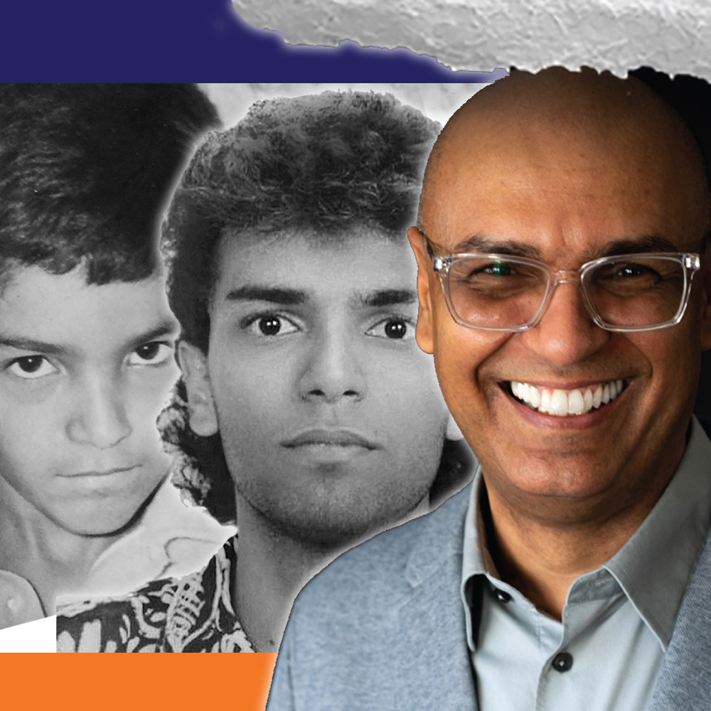

Engineering, story, and song — held together by purpose.
Engineering, story, and song — held together by purpose.
This site brings together the technical life, the written life, and the musical life behind Engineering with a Heart.
Engineering with a Heart is not only a technical project. It is the meeting point of systems thinking, lived experience, and music — a place where professional work, memoir, and creative expression speak to one another.
Distributed systems, infrastructure, observability, diagnostics, and the disciplined craft of building technology that serves real human needs.
Essays and memoir that turn lived experience into reflection — crossing Brazil, Europe, and the United States with honesty, gratitude, and moral clarity.
Songs, recordings, and musical memory that reveal another side of the same journey — voice as feeling, resilience, love, and creative expression.
Essays on technology, dignity, migration, memory, and the human responsibilities that live inside modern systems.
Impossible Crossing is the human story behind Engineering with a Heart. It follows a life shaped not only by hardship, perseverance, and crossing between worlds, but by the extraordinary people who appeared along the way — family, friends, mentors, and unexpected guides whose example, kindness, courage, and influence helped give that journey meaning.
More than a story of personal struggle, it is a tribute to the people and places that formed a life: the culture, streets, classrooms, friendships, acts of compassion, and songs that carried memory forward. The book provides the human foundation for the reflections explored throughout this site — on technology, dignity, service, and the belief that progress matters most when it honors people.

R.J. Silva is a Brazilian-born engineer, author, and singer whose work bridges cultures, disciplines, and forms of expression. Across distributed systems, large-scale infrastructure, networking, observability, and software architecture, he has helped build complex systems — while also writing memoir and recording music that give voice to the human story behind the work.
Having lived in Brazil, Spain, Belgium, and the United States, he writes and creates from the perspective of someone who has crossed different worlds, witnessing both hardship and opportunity. That journey shapes Engineering with a Heart, Impossible Crossing, and a growing body of musical work rooted in gratitude, memory, resilience, and love.